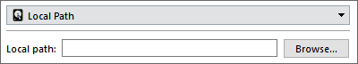

Storage configuration ¶
Overview ¶
This document describes the storage locations available in Comet. The information applies to both (A) configuring a data storage location in Comet Server, and (B) configuring a Storage Vault location for a Comet Backup user (either locally in the Comet desktop client, or remotely via the Comet Server web interface).
There is a unified storage model across both Comet Server and the Comet Backup client. This means that you can use any of the supported storage locations as a data location for a Storage Role Comet Server; or, you can configure a Storage Vault in Comet Backup to enable backing up to any of the supported storage locations.
The former allows you to leverage cloud resources while still providing a completely opaque front to your customers. The latter may be more efficient and avoids double-handling the bandwidth.
For more information about cloud storage providers, please see the "Cloud Storage Providers" page of the documentation.
Virtual storage locations ¶
As well as physical storage locations (e.g. local disk, an SFTP server, or Amazon S3), Comet also has a number of virtual storage locations available. These virtual storage locations may combine aspects of physical storage locations in order to offer additional features.
Configuring Cloud Storage with Comet ¶
Your cloud storage can be utilised at the server level or at the desktop client level.
To utilise cloud storage at the server level, where it will pass through the Comet Server, to the cloud storage provider; configure it as a target location in your Comet Server's Storage Role configuration using only one bucket. When setting up a Storage Vault for an account, simply assign it a Requestable Storage Vault. Your Comet Server will automatically create subdirectories to store the data for each new Storage Vault.
Configuring your cloud storage this way has the caveat of requiring your server to handle all traffic to the cloud storage destination but if your Comet Server is hosted in the same region as the cloud storage account, this may or may not have a zero-rated bandwidth cost.
{kind=link}
To utilise cloud storage on the desktop client level, where it will go from the desktop client directly to the cloud storage. You can either configure a new Custom Storage Vault per account pointing to your cloud storage, or create a Requestable Storage Vault pointing to one of the supported cloud storage providers; when adding a Storage Vault for a new or existing account, simply assign it the Requestable Storage Vault.
If you configure your cloud storage as a Custom Storage Vault, be aware that this will expose the cloud storage access credentials to the client, so it is best reserved for situations in which the credentials are exclusive to the user, i.e. generated per-user credentials with separate buckets. If you utilise your cloud storage directly as a Requestable Storage Vault, the access keys granted will only have permissions for its own subdirectory and won’t be able to access other accounts data.
{kind=link}
When using cloud storage in Comet Server, the upload stream is proxied through to the cloud storage account (if possible), or buffered in memory. No data touches the local disk (no IOPS penalty). However, under memory pressure, the operating system may write to the swap file in proportion to the transfer load.
If you are able to set up isolated cloud storage accounts for each user, then configuring cloud storage in the desktop client will be more efficient.
- Some cloud storage providers support creating dedicated, isolated access key/secret key pairs that can only access a single bucket:
- Amazon S3 and Wasabi, by IAM policies
- Backblaze B2, by Application keys
If you are sharing a single cloud storage account for multiple users, you should set it up behind Comet Server.
- Otherwise, the customers are not sufficiently isolated. Although the backup data is encrypted, it would still be possible for customers to delete other customers' backup data, or monitor their backup activity.
Credential hiding ¶
When backing up from Comet Backup directly to cloud storage, it's not possible to hide the cloud storage credentials, nor the choice of cloud storage provider. Even if the information was hidden in the Comet Backup client GUI, the customer could still discover it by network analysis or with a software debugger.
Configure a cloud provider as a storage destination for your Comet Enterprise Server ¶
Use the Comet Server Service Manager setup wizard.
During the Enterprise setup wizard, step 4 allows you to configure a cloud storage account as a storage destination.
During the Customer data storage step, select Advanced / Cloud storage – Setup…
{kind=link}
From the drop-down select your cloud storage or S3-compatible/OpenStack Swift for all other providers, then enter your account details and hit Save.
{kind=link}
You have now configured your cloud storage account as a backup destination for your Comet Enterprise server.
Configure the Comet Backup client to backup directly to the cloud ¶
The Comet Backup client allows you to configure backing up directly from the device to the cloud.
Select Account from the left hand menu in the agent.
{kind=link}
Select + Add Storage Vault from the bottom of the agent. This will start the storage vault configuration options. Select Custom…
{kind=link}
From the General tab enter a name for the storage vault.
{kind=link}
Navigate to the Storage page and from the drop down select your cloud storage or S3-compatible/OpenStack Swift for all other providers. Enter the details of your cloud providers account and hit Save.
{kind=link}
Your storage vault will now be visible and selectable during the backup and restore process.
{kind=link}
You have now configured the Comet desktop agent to backup directly to the cloud provider.
You can also setup a direct Requestable Storage Vault using one of our supported cloud providers.
Available storage locations ¶
Local Path ¶
Data will be stored on the local filesystem.

Configuration ¶
The following configuration options are available:
| Option | Requirement | Description |
|---|---|---|
| Local Path | Mandatory | The path to store data |
Simultaneous connections ¶
In this mode, Comet does not place a limit on the number of simultaneous accesses to the storage.
Windows ¶
Some versions of Windows have a limit of 255 characters in a path name. As of Comet Server 2.8.6, Comet works around this issue, so there is no restriction on the path length that you use for local storage.
If the storage path is a mapped network drive, then ensure that you consider any path restrictions on both the mapped drive and its source drive.
Comet Server Storage Role Bucket ¶
In the Comet Backup client application, this option appears under a rebranded name.
Comet Server includes the "Storage Role" microservice. The Storage Role is an object storage system; you can create any number of "buckets", each with a secret authorization key, which can be used to store and retrieve structured data from the bucket.
A Storage Role Bucket is a supported data storage location for a Comet Backup Storage Vault. In the interest of preventing confusion, Comet Server does not accept using another Storage Role Bucket as a data storage location; if you want to store data from one Comet Server on another physical Comet Server, consider enabling server replication instead.
Configuration ¶
| Option | Requirement | Description |
|---|---|---|
| Hostname | Mandatory | The URL of the Comet Server (Storage Role) hosting this bucket. The URL should include the protocol (http/https) and a trailing slash. |
| Bucket ID | Mandatory | The name of the bucket. |
| Bucket Key | Mandatory | The secret key, to authorize bucket access. |
Simultaneous connections ¶
Comet Backup makes up to 10 simultaneous connections to the Comet Server Storage Role.
If multiple operations are running simultaneously in Comet Backup, the number of connections may be higher.
SFTP ¶
Data will be stored on an SFTP server, such as OpenSSH.
Configuration ¶
The following configuration options are available:
| Option | Requirement | Description |
|---|---|---|
| Address | Mandatory | The hostname for the SFTP server. You may specify a port by adding a :22 suffix. The default port is 22. |
| Username | Mandatory | The username to log in to the SFTP server. |
| Remote path | Optional | A remote path or subdirectory where data will be stored on the SFTP server. If the path starts with /, it is an absolute path. If the path does not start with /, the path is relative to the SFTP user's home directory. |
| Authentication | Mandatory | The authentication type to log in to the SFTP server. Must be one of Native, Password, or Private key. In Native mode, the system OpenSSH configuration is used to log in to the server. |
| Password | Required when Authentication is Password |
The account password. |
| Private key | Required only when Authentication is Private key |
The account private key, unencrypted, in OpenSSH format. |
| Verification | Required only when Authentication is not Native |
Whether to verify host keys for the SFTP server. Must be one of Native, Allow any host key, or Custom path to known_hosts file. In Native mode, the system OpenSSH configuration is used to check known hosts. |
known_hosts file |
Required only when Verification is Custom path only |
A local file path, used to keep track of SFTP server host keys. |
Simultaneous connections ¶
During a job, Comet Backup performs up to 10 simultaneous actions upon an SFTP destination.
If multiple operations are running simultaneously to an SFTP Storage Vault in Comet Backup, the number of network connections may be higher.
FTP ¶
Data will be stored on an FTP server, such as FileZilla Server or ProFTPd.
WARNING: The FTP protocol has a number of inherent limitations, making this storage type a "last resort" for accessing certain remote data locations. If possible, you may achieve better performance and connectivity by using an alternative server, such as SFTP or the "Local Path" type over a mounted SMB or NFS share.
Configuration ¶
The following configuration options are available:
| Option | Requirement | Description |
|---|---|---|
| Address | Mandatory | The hostname for the FTP server. You may specify a port by adding a :21 suffix. The default port is 21. |
| Security | Mandatory | The FTP over TLS (FTPS) mode. |
| Username | Mandatory | The username to log in to the FTP server. |
| Password | Mandatory | The account password. |
| Use default home directory | Optional | Whether to store data in the FTP user's home directory. |
| Custom directory | Required only when Use default home directory is disabled |
A remote path to store data in. Paths are relative unless anchored with a leading /. |
| Connections | Mandatory | The number of simultaneous FTP connections. The defalut connection limit is 5. |
| Accept invalid SSL | Optioinal | Whether to accept invalid SSL Certificate from the FTP server. |
Simultaneous connections ¶
Prior to Comet 19.9.1, Comet makes 1 single network connection to the FTP server.
As of Comet 19.9.1, the number of simultaneous connections can be set to the FTP server.(default 5)
If multiple operations are running simultaneously to an FTP Storage Vault in Comet Backup, the number of network connections may be higher.
Amazon S3 ¶

Data will be stored in an Amazon S3 bucket.
With Amazon S3, bucket names are globally unique across all of the standard regions, so it's not necessary to specify which region the bucket is contained in (e.g. us-east-1, eu-central-1) as this can be determined automatically. The only exception is if you are storing data in an isolated region such as China (Beijing) Isolated Region.
If you specify a bucket name that does not exist, Comet will attempt to create it automatically in the default US East (N. Virginia) region.
It's possible to connect to Amazon S3 using the "S3-compatible" storage type, however, a dedicated option is available owing to the popularity of this service.
Comet supports Amazon S3 since the very first release.
Configuration ¶
The following configuration options are available:
| Option | Requirement | Description |
|---|---|---|
| Region | Mandatory | The endpoint for accessing Amazon S3. |
| Access key | Mandatory | The access key for the Amazon S3 account |
| Secret key | Mandatory | The secret key for the Amazon S3 account |
| Bucket | Mandatory | The globally unique name of the storage bucket |
| Subdirectory | Optional | A prefix to add to all stored blobs. This may be useful to isolate Comet's data within the bucket if the bucket is being shared with another application. |
Simultaneous connections ¶
Comet makes up to 10 network connections to the Amazon S3 server.
If multiple operations are running simultaneously to an Amazon S3 Storage Vault in Comet Backup, the number of network connections may be higher.
Google Cloud Storage ¶

Google Cloud Storage is an S3-compatible storage product within the Google Cloud Platform.
It's possible to connect to Google Cloud Storage using the "S3-compatible" storage type, however, a dedicated option is available owing to the popularity of this service.
You can retrieve credentials under the "Interoperability" section of the Google Cloud Platform web interface.
{kind=link}
Configuration ¶
| Option | Requirement | Description |
|---|---|---|
| Access key | Mandatory | The access key for the Google Cloud Platform account |
| Secret key | Mandatory | The secret key for the Google Cloud Platform account |
| Bucket | Mandatory | The globally unique name of the storage bucket |
| Subdirectory | Optional | A prefix to add to all stored blobs. This may be useful to isolate Comet's data within the bucket if the bucket is being shared with another application. |
Simultaneous connections ¶
Comet makes up to 10 network connections to the Google Cloud Storage server.
If multiple operations are running simultaneously to a Google Cloud Storage Storage Vault in Comet Backup, the number of network connections may be higher.
S3-compatible ¶
The protocol for object storage on Amazon S3 eventually became widespread enough to be called a pseudo-standard. A number of alternative storage providers offer S3-compatible object storage, in order to interoperate with the large body of available software and services surrounding this pseudo-standard.
A number of commercial storage providers offer an S3-compatible API. For more information about S3-compatible cloud storage providers, please see the "Cloud Storage Providers" document.
Alternatively, you can run your own S3-compatible storage server as a replacement for Comet Server's Storage Role. A number of server software packages are available for this purpose, such as
- Minio
- OpenStack Swift
- Ceph Object Store
- OpenIO
- LeoFS
- Pithos on Apache Cassandra
- Scality Zenko CloudServer (formerly Scality S3 Server)
- Read more on Wikipedia
API Compatibility ¶
Comet uses S3's streaming APIs to improve performance. You should ensure that any S3-compatible server implements streaming APIs in order to maintain compatibility.
In late August 2017, the S3-compatible storage provider Wasabi added support for S3's streaming APIs, and is now compatible with all versions of Comet Backup.
Configuration ¶
| Option | Requirement | Description |
|---|---|---|
| Hostname | Mandatory | The hostname for the S3-compatible server. |
| Access key | Mandatory | The access key for your user account |
| Secret key | Mandatory | The secret key for your user account |
| Bucket | Mandatory | The bucket in which to store all data |
| Subdirectory | Optional | A prefix to apply to all objects stored in the bucket |
| Use encrypted transmission | Optional | Whether to access the S3-compatible server using the HTTPS protocol. Data is encrypted and authenticated regardless of whether HTTPS is in use. |
Simultaneous connections ¶
Comet makes up to 10 network connections to the S3-compatible Storage server.
If multiple operations are running simultaneously to an S3-compatible Storage Vault in Comet Backup, the number of network connections may be higher.
Wasabi ¶

Wasabi Cloud Storage is an S3-compatible storage product.
It's possible to connect to Wasabi Cloud Storage using the "S3-compatible" storage type, however, a dedicated option is available owing to the popularity of this service.
You can retrieve your access keys under the hamburger button on the top left section and then clicking on Access Keys
{kind=link}
Configuration ¶
| Option | Requirement | Description |
|---|---|---|
| Access key | Mandatory | The access key for the Wasabi Cloud Storage account |
| Secret key | Mandatory | The secret key for the Wasabi Cloud Storage account |
| Bucket | Mandatory | The globally unique name of the storage bucket |
| Subdirectory | Optional | A prefix to add to all stored blobs. This may be useful to isolate Comet's data within the bucket if the bucket is being shared with another application. |
Simultaneous connections ¶
Comet makes up to 10 network connections to the Wasabi Cloud Storage server.
If multiple operations are running simultaneously to a Wasabi Cloud Storage Storage Vault in Comet Backup, the number of network connections may be higher.
Backblaze B2 Cloud Storage ¶

B2 is a low-cost storage offering from Backblaze.
BackBlaze B2 supports multiple Application Keys for different access permission to B2 Buckets. You can configure Comet to use either the Master Application Key, or a per-bucket Application Key.
Configuration ¶
| Option | Requirement | Description |
|---|---|---|
| Application key ID / Account ID | Mandatory | If you are using the Master Application Key, enter the Account ID for your Backblaze B2 account here. For a per-bucket Application Key, enter the Application Key ID. |
| Application key | Mandatory | Enter your Master Application Key or for per-bucket, enter the Application key (this is shown when creating the Application key). |
| Bucket name | Mandatory | The bucket in which to store all data |
| Subdirectory | Optional | A prefix to apply to all objects stored in the bucket |
| Connections | Optional | Configure the maximum number of simultaneous connections to Backblaze B2 servers. Set to zero to use the default. |
Alternative connectivity ¶
As an alternative, you can also access Backblaze B2 Cloud Storage using the "S3-compatible" storage type if you run a S3-to-B2 gateway server, such as Minio.
Simultaneous connections ¶
Comet allows you to set a custom maximum number of simultaneous connections to Backblaze B2. The default limit is 5.
If multiple operations are running simultaneously to a Backblaze B2 Storage Vault in Comet Backup, the number of network connections may be higher.
Backblaze B2 Fireball ¶
To perform a backup to the Backblaze Fireball, connect your Backblaze Fireball to your network or computer and ensure the SFTP is enabled.
{kind=link}
On the Comet client in the Account tab, select + Add Storage Vault and click Custom.
{kind=link}
Create a name and in the Storage tab, select the SFTP option. Enter the Fireball’s address, path, username and password (change Authentication to Password).
{kind=link}
Now you can backup to Backblaze Fireball.
After you have backed up the data to the Fireball, follow Backblaze’s instructions to courier the Fireball to their datacentre. You will then need to update the storage vault details so that it points to the Backblaze B2 bucket.
Azure Blob Storage ¶

Azure Blob Storage is a public-cloud object storage service operated by Microsoft under the Azure branding.
Compatible implementations ¶
Comet's support for Azure Blob Storage can also be used to connect to third-party storage services that are compatible with the Azure Blob Storage API.
You can enter a custom "Realm Address" in the configuration to use a third-party storage service.
Comet is compatible with storage providers based on
- Microsoft Azure Stack
- Azurite
- Microsoft Azure Storage Emulator (not recommended for production data storage)
Alternative connectivity ¶
You can access Azure Blob Storage using the "S3-compatible" storage type if you run a S3-to-Azure gateway server, such as Minio.
Configuration ¶
| Option | Requirement | Description |
|---|---|---|
| Realm address | Mandatory | The hostname or URL for the Azure Blob Storage realm (usually core.windows.net). Use a scheme-qualified URI (e.g. http://) in order to toggle TLS. |
| Account name | Mandatory | The name of your user account |
| Account key | Mandatory | The key for your user account |
| Container | Mandatory | The container in which to store all data |
| Subdirectory | Optional | A prefix to apply to all objects stored in the container |
Simultaneous connections ¶
During a job, Comet Backup performs up to 10 simultaneous actions upon an Azure Blob Storage destination.
If multiple operations are running simultaneously to a Azure Blob Storage -based Storage Vault in Comet Backup, the number of network connections may be higher.
OpenStack Swift ¶
OpenStack Swift is an open-source data storage system that can be implemented by a storage provider. A number of commercial storage providers using this system are listed on the "Cloud Storage Providers" document.
Comet's integration with OpenStack Swift also supports compatible implementations of the Swift protocol, such as Ceph Object Store.
Configuration ¶
Your connection to OpenStack is authenticated using one of the following methods:
- Identity API v1 is a basic system available from all OpenStack providers.
- Identity API v2 introduced "Tenants", to isolate multiple users.
- Identity API v3 introduced "domains", as another layer of isolation. Additionally, Tenants were renamed to "Projects".
Comet automatically determines the API version to use based on the URL set in the "Auth Endpoint" field. For security reasons, we recommend using the highest possible API version that is supported by both Comet and your OpenStack provider.
| Option | Requirement | Description |
|---|---|---|
| Auth Endpoint | Mandatory | The URL for the OpenStack Auth server, including protocol (http:// or https://). These URLs commonly end in v1.0 or v2.0. |
| Username | Mandatory | The username for your account. |
| API Key | Mandatory | The API key for your user account. |
| Container | Mandatory | The container in which to store all data. It will be created if it does not yet exist. |
| Subdirectory | Optional | A prefix to apply to all objects stored in the container |
| Domain Name | Optional | The domain name. Applies to v3 only |
| Region | Optional | The region to use (e.g. LON or ORD). If not specified, a region may be automatically selected. Applies to v2 / v3 |
| Tenant name | Optional | Name of the tenant/project. Applies to v2 / v3 |
| Tenant ID | Optional | The ID of the tenant/project. Applies to v2 / v3 |
| Tenant Domain | Optional | Name of the tenant/project's domain, if it differs from the user domain. Applies to v3 only |
| Trust ID | Optional | The ID of the trust Applies to v3 only |
| Container Policy | Optional | The policy to use when creating the container, if it does not yet exist. |
Simultaneous connections ¶
Comet makes up to 10 network connections to an OpenStack Swift server.
If multiple operations are running simultaneously to an OpenStack Swift Storage Vault in Comet Backup, the number of network connections may be higher.
Spanned ¶
The "Spanned" storage location is a virtual location that pools disk space from multiple other storage locations. Comet automatically balances files between all of the spanned storage locations. This feature is implemented akin to a union filesystem, where all locations are viewed as one. Data files can be spread between all locations, and even rebalanced during runtime.
There is zero overhead when using the Spanned type with one single location.
Write strategy ¶
If multiple storage volumes are configured, then Comet must determine which volume to write to. The "write strategy" is intended to balance the priorities of (A) storage space, (B) keeping disks busy, and (C) minimizing overheads associated with measuring disk free space and disk IOPS.
At first, when all volumes have a lot of free space, writes are randomly distributed evenly between all storage volumes. This strategy means that disk space is used roughly efficiently across all volumes, and all drives will simultaneously serve the writing load on the server, providing the maximum benefit.
Once any volume has less than a certain amount of free space, Comet gradually switches to a different strategy, in which it writes solely to a particular volumes with the most free space available. This means that the remaining disk space will be used efficiently, although only one drive at a time will service the writing load (all drives will still service the reading load).
It is not generally feasible to determine the free space available on a cloud storage provider. When spanning between local disks and cloud storage providers, cloud storage providers are preferred.
Future versions of Comet will enable other write strategies (e.g. lowest disk IOPS), or, allow configuring the preferred write strategy.
Using "Spanned" with Comet Server ¶
When using the Spanned type as a storage location for a Comet Server, this allows your Storage Role server to virtually offer data that is hosted on a remote server (e.g. Amazon S3).
Cloud Failover ¶
When using the Spanned type with Comet Server, you can achieve a best-performance scenario by configuring a Spanned storage with only a Local Path location, and then expanding to a cloud storage provider once local resources are exhausted.
Simultaneous connections ¶
Each constituent data location that comprises the Spanned data location is subject to its individual connection limit. There is no additional connection limit for Spanned data locations.